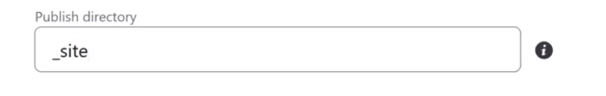

How to build a Quarto website
Introduction
In this article, I’ll demonstrate how to utilize RStudio and Netlify to construct your Quarto website. There are several advantages to a Quarto website. Firstly, it supports multiple popular languages, including Python, R, and LaTeX. Secondly, publishing on a Netlify domain is free of charge.
Step1: Install Git
First, download Git.
If you already have Git, you can skip this step.
Step2: Create a GitHub Account
Create GitHub account.
There are two things to note:
Use your permanent email to create the account; don’t use your work or school account. This is to ensure you can always access your account and work.
Use a simple GitHub username that doesn’t include spaces in the name.
If you already have a GitHub account, you can skip this step.
Step3: Install RStudio
Install Rstudio (now it has a new name Posit).
If you already have Rstudio, you can skip this step.
Step4: Setup RStudio
Open your RStudio. Click “File” and select “New Project” within Rstudio.
Select “New Directory”.
Select “Quarto Website”. (If there is no such option, you may need to update your Rstudio version. )
For “Directory name”, don’t include any space in the name.
For “Create projects as a subdirectory of”, click on “Browse” to select the folder with the same name as your GitHub username. If you haven’t created a folder with this name yet, please create one first. For instance, my GitHub username is “simonchiu902”, so I created a folder named “simonchiu902” and then used “Browse” to select this folder.
Make sure other settings are the same as the screenshot and click on “Create Project”.After the above steps, Rstudio will direct you to your new project.
If you check your directory, you’ll find the following files have been created.
Now, go back to your Rstudio and click “Build” and “Render Website”.
A window will pop up and this is the draft of your website where we will further make changes.
Step5: Set up Git
We are going to use Git within R for version control.
Type in “git config –global user.name” in the “Terminal” to check if you’re linking to the correct Github name.
If your output is empty or wrong, type “git config --global user.name”your_username”” in your terminal. (replace your_username with your correct username)
Type in “git config --global user.email” to check if the email is correct.
If not, then type “git config --global user.email”your_email”” in your terminal. (replace your_email with your correct email)
Click “Tools” and “Install Packages” to install “devtools” and “usethis”
Type “usethis::use_git()” in your “Console”. (note that this time we use “Console”, not “Terminal” in previous steps)
It will ask you “Is it ok to commit them?”. We don’t want to commit now so select “No” by typing the corresponding number.
Then it will ask you “A restart of RStudio is required to activate the Git pane. Restart now?”. Select “Yup” by entering the corresponding number.
After restart, you can see a “Git” option is added on the upper right panel.
Check all items in the Git panel.
Tipclick on first item, press Shift and click the last item to select all items
After selecting all items, click “Commit”.
The window will pop up. Fill in your desired comment in the “Commit message” and then click “Commit”.
After “Commit”, go back to your Rstudio. There should be no more items under “Git”.
Step6: Build Link to GitHub
Type “usethis::use_github()” in the Console.
If you encounter the following error, this may be because you lack a valid Github token. To solve this, please follow the following steps.
Type “usethis::create_github_token()” and this will direct you to a Github page.
Fill in your “Note” and set up “Expiration” days.
Scroll to the bottom of the page and click “Generate token”. This will direct you to a new page with a new generated token. Do not close this new page with your token, we’ll use it later.
Back to your Rstudio, type “gitcreds::gitcreds_set()”.
In my case, I previously used some older and outdated credentials (tokens), triggering this message. I’ll proceed by choosing “Replace these credentials” and typing the associated number. If you haven’t entered any credentials previously, you might simply be prompted to input your new credentials directly into the console, allowing you to paste your newly generated credential.
After I enter 2, it prompts me to enter my newly generated token. You can go back to the Github page showing the new token, copy and paste it in the console.
After successfully render your token, type in “usethis::use_github()” again.
This time it should successfully direct you to Github and create a new repository for you.
Step7: Use Netlify to publish your website
Sign up Netlify with your Github account.
After signing in, it will direct you to this page.
Find the “Add new site” button and click on “Import an existing project”.
Click “Deploy with GitHub” and link Netify with your Github account.
Select your newly created repository.
Keep all the settings unchanged, but specifically input “_site” into the “Publish directory” field. Click on “Deploy” to finish the setting.

After you deploy the website, it will direct you to this page. The link is a random name and we can change it by clicking “Site configuration”.
Find “Change site name” and change the url to your desired name.
You may need to wait a few minutes for Netify to process and then you can use the new URL to access your website.
Credit
I would like to acknowledge Dr. KAM Tin Seong for his guidance on utilizing Quarto, imparted during his Visual Analytics course at SMU. This tutorial is compiled based on his lectures, and I believe it’s valuable to share with individuals keen on exploring Quarto.